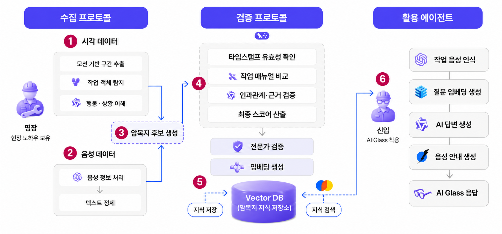

SkillX : 산업 현장 암묵지 DB 구축 및 검증 프레임워크
포스코 인재창조원 · 포항공과대학교 인공지능연구원
TEAM LEADER
AGENTRAGVLMYOLOWHISPER
- PROBLEM
숙련 작업자의 작업 노하우는 문서로 남지 않고 개인의 경험에만 축적됩니다. 스마트글래스로 현장 영상·음성을 확보해도 작업 순서와 의도를 사람이 일일이 확인해 정리해야 했기 때문에, 인력이 교체되면 해당 지식이 그대로 유실되는 구조였습니다.
- APPROACH
-

수집 → 검증 → 활용 3단계 파이프라인. 자동 검증과 전문가 검증을 모두 통과한 결과만 Vector DB에 적재하고, 현장에서는 AI Glass 음성 질의로 해당 지식을 조회합니다. - RESULT
기록되지 않던 현장 작업을 검증된 지식 데이터로 축적하고, 신입 작업자가 AI Glass에 음성으로 질의하면 해당 지식을 즉시 조회하는 단계까지 연결했습니다. 팀 리더로 파이프라인 전체 설계와 역할 분담을 담당했습니다.
- STACK
Python · PyTorch · Qwen2.5-VL · YOLO · Whisper · LangChain · RAG · Vector DB · OpenCV · MediaPipe · Hugging Face Transformers
- LEARNED
개별 모델의 성능보다 단계 간 연결에서 문제가 더 많이 발생했습니다. 각 단계가 실패했을 때 무엇을 자동으로 걸러내고 무엇을 전문가 검증으로 넘길지 미리 정의하는 것이 Agent 설계의 핵심이었습니다.